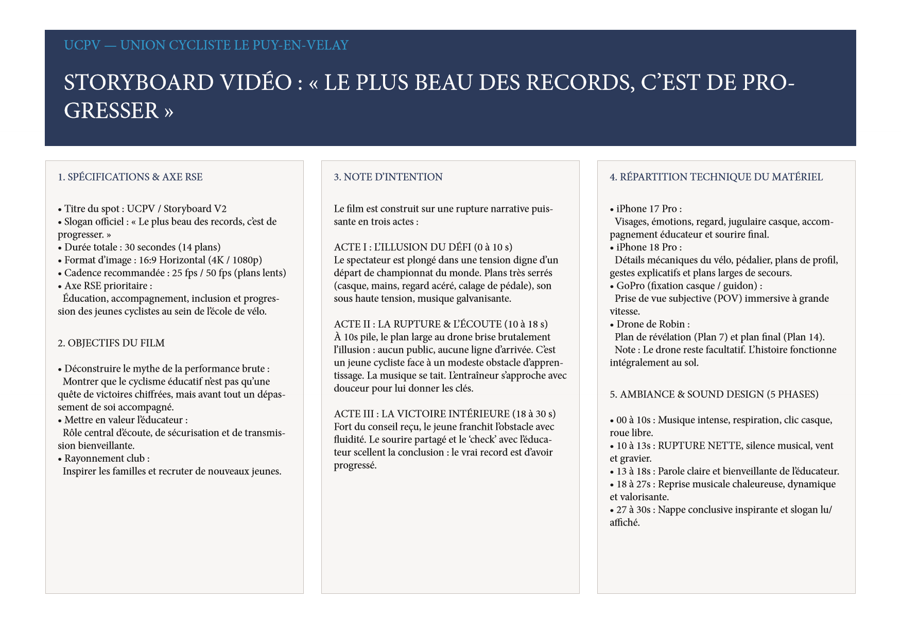
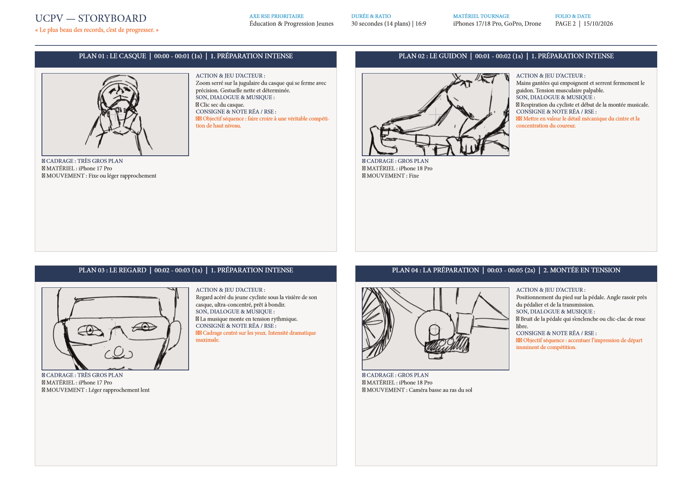
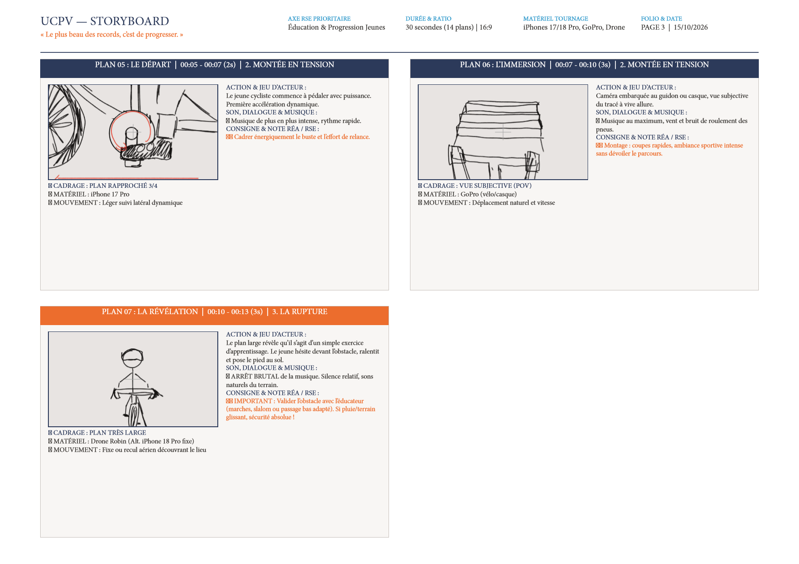
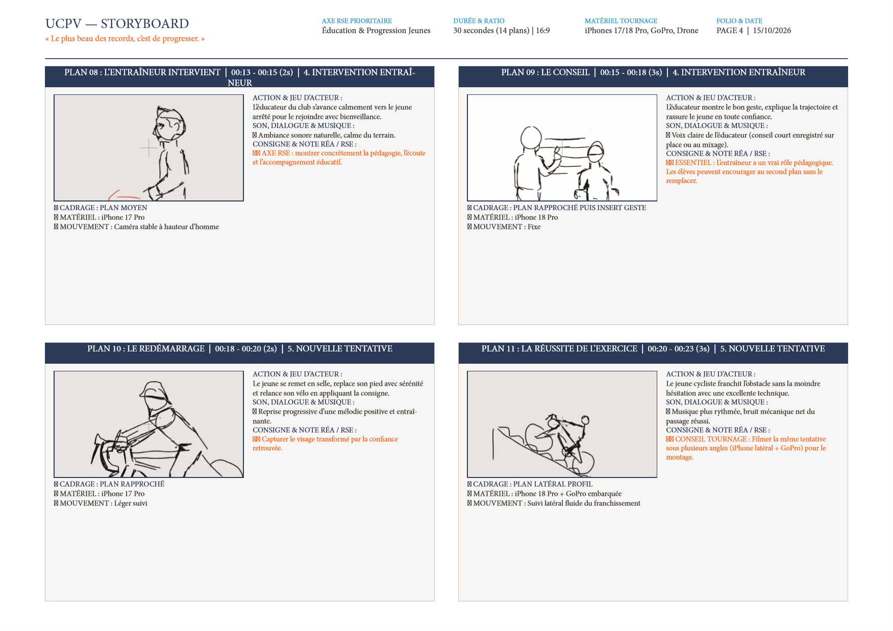
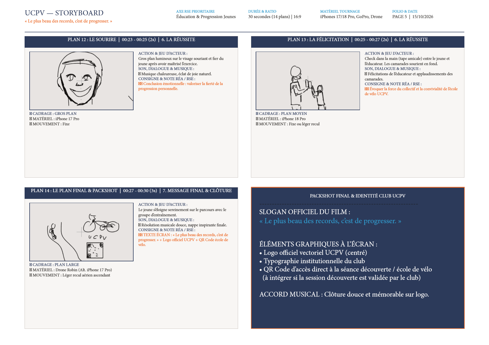
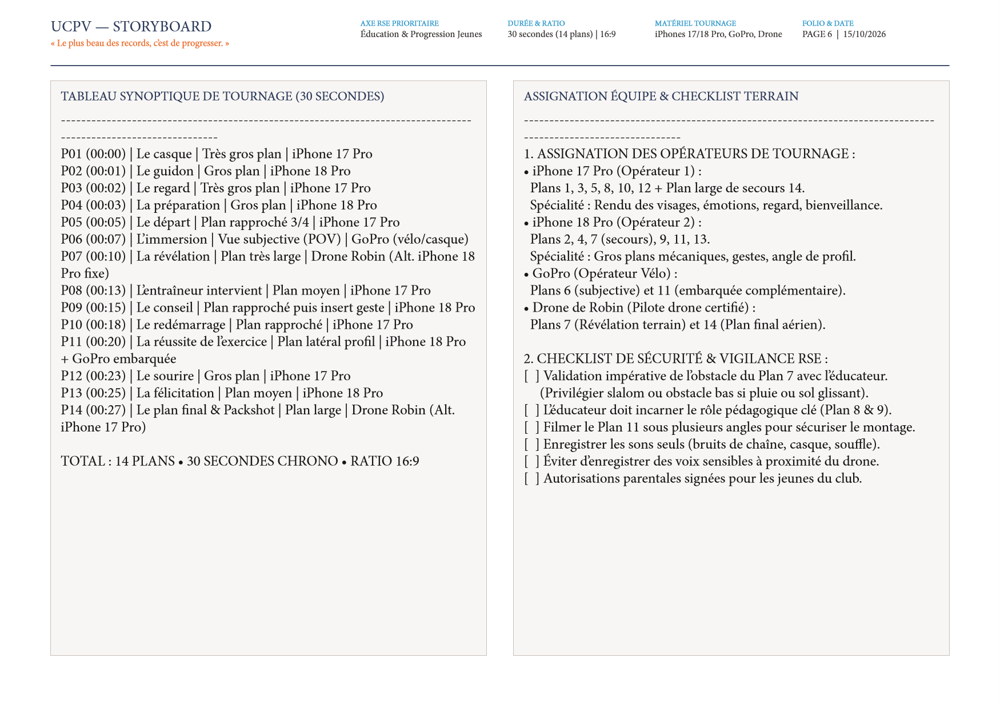
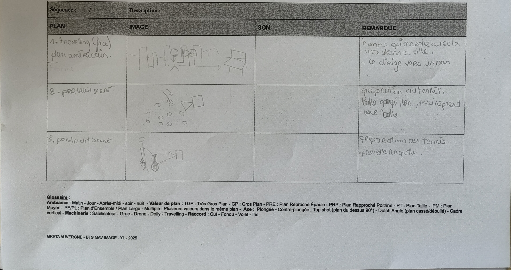
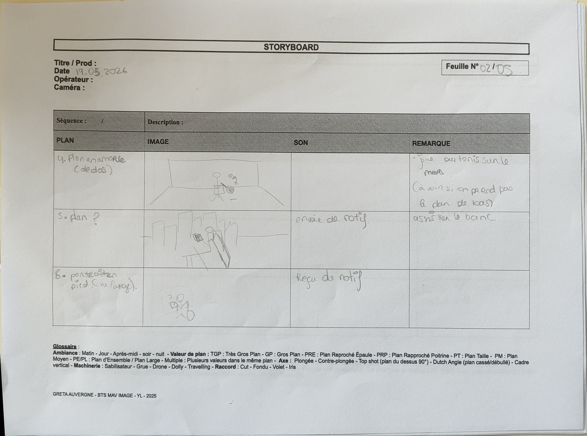
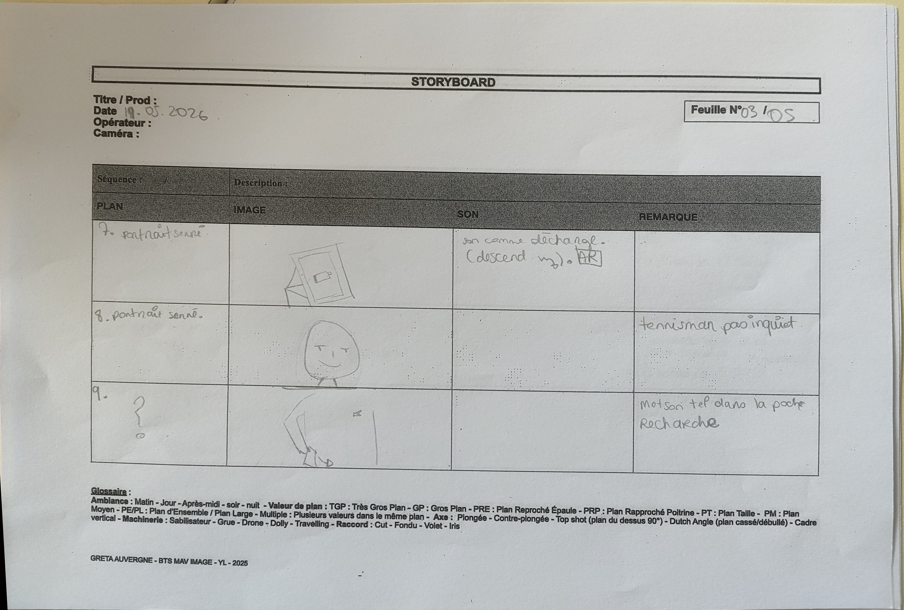

After Effects
& Storyboard.
Du premier coup de crayon sur le storyboard jusqu'à l'animation d'images clés, l'espace 3D et les effets visuels.
Voir les storyboards ↓ Voir les animations After Effects ↓- Disciplines
- Motion Design, VFX & Storyboarding
- Pré-production
- Découpage technique, cadrage & narration
- Animation
- Parallaxe 2.5D, Logo Reveal, Reels
- Logiciels
- After Effects, Premiere Pro, Illustrator, InDesign
Du découpage papier à l'animation sur After Effects.
Qu'il s'agisse d'un spot institutionnel tourné à plusieurs caméras, d'un format court vertical pour les réseaux sociaux ou d'une animation purement graphique sous Adobe After Effects, un projet vidéo réussi repose toujours sur la maîtrise du rythme et de l'espace visuel.
Cette page rassemble mes travaux de pré-production (storyboards illustrés, découpages techniques multi-caméras, intentions sonores) et mes expérimentations en motion design : mise en profondeur 2.5D par effet de parallaxe, animation vectorielle, habillage de logotypes et effets visuels intégrés au montage.
UCPV : « Le plus beau des records, c'est de progresser »
Conception intégrale d'un dossier de storyboard professionnel de 6 pages pour un spot vidéo de 30 secondes au format 16:9 centré sur l'axe RSE Éducation & Progression Jeunes.
La dramaturgie est structurée en trois actes : Acte I — L'illusion du défi (le duel face au champion), Acte II — La rupture & l'écoute (le geste corrigé et la transmission), et Acte III — La victoire intérieure (battre son propre record personnel).
- 14 vignettes dessinées : indication précise des valeurs de cadre (plan large, gros plan, insert, POV), mouvements d'appareil et raccords.
- Dispositif multi-caméras : répartition technique entre iPhone Pro (4K 60/120 fps sur stabilisateur ou trépied), GoPro embarquée (POV dynamique) et Drone pour le plan final en élévation.
- Sound design & Voix-off : synchronisation plan par plan des ambiances sonores, respirations, impacts et musique crescendo.

Les 6 planches du Storyboard UCPV





Effet Parallaxe 2.5D : Phoenix & pétales de rose
Ce projet réalisé sous After Effects explore la transformation d'illustrations fixes en une scène cinématographique animée en profondeur (2.5D). Chaque plan — le phœnix embrasé en arrière-plan, les nuées de pétales de rose à mi-distance et les pétales floutés au premier plan — est détouré sur un calque distinct puis réparti sur l'axe Z.
Un mouvement de caméra virtuelle combiné à la gestion de la profondeur de champ (flou d'objectif progressif) et à une animation subtile des particules crée une illusion de volume saisissante.
Animation vectorielle & trajectoires de vol
De la préparation des calques vectoriels sous Adobe Illustrator à l'animation des courbes de vitesse (Graph Editor / Easy Ease) dans After Effects, cet exercice de motion design met en scène le décollage et la course d'une fusée à travers l'espace.
Le travail porte particulièrement sur l'anticipation du mouvement, la déformation élastique (squash & stretch), l'animation de la traînée de propulsion et le défilement multi-plans du décor étoilé.
Animations de logos & Reels en mouvement
Aperçu direct de mes réalisations vidéo : animations dynamiques de logotypes et formats courts verticaux issus de nos planches de storyboard.
Les planches de storyboard crayonnés (Lacoste Goliath)


